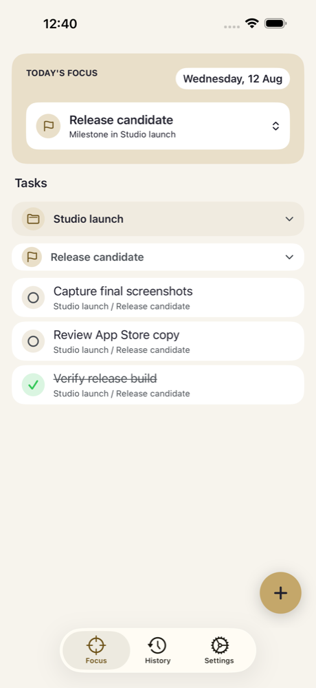
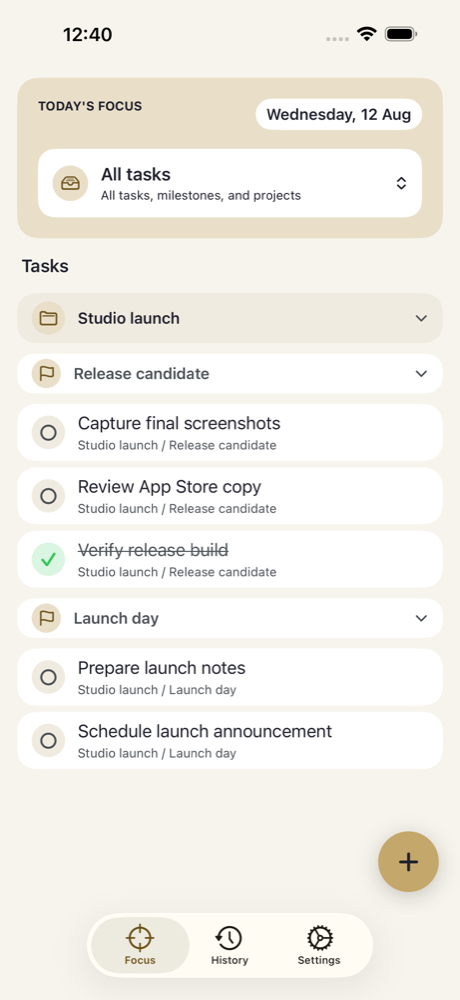
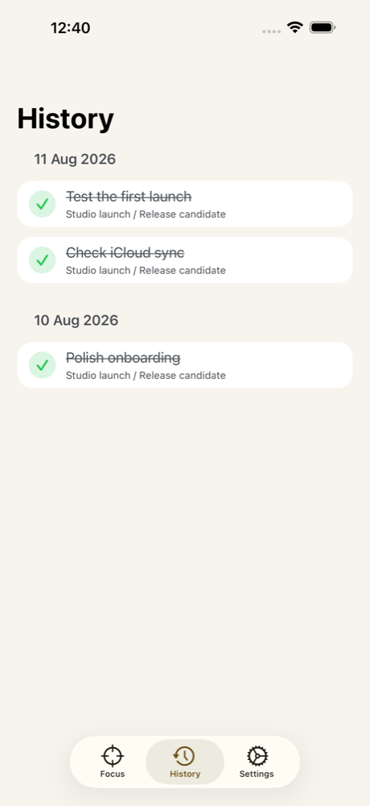

Choose today’s focus.
Bring all your tasks into view, or narrow things down to a project, a milestone, or your standalone tasks.
A quieter way to get things done
Give your day some shape. Choose your focus, make room for the work, and see what moved forward.

Free for iPhone & iPad · iOS / iPadOS 18 or later
Meet your daily workspace
Enough structure. Room to breathe.
Keep the work organised without turning your day into a system to maintain.
Bring all your tasks into view, or narrow things down to a project, a milestone, or your standalone tasks.
Projects hold the bigger picture. Milestones break it into manageable pieces. Tasks keep the next step clear.
Completed tasks move into History at the end of the day. Start fresh without losing sight of what you finished.


A workspace that stays yours
Your workspace lives on your device. When iCloud is available, it can sync through your private iCloud database across your iPhone and iPad.
No Cybernetks account. No advertising, tracking, or third-party analytics.
Read our privacy policyIndependent software, supported by choice
Every feature available today is free.
If Operator helps your day, the optional Founding Supporter Pass is a one-time purchase inside the app. It includes permanent Founder recognition, a Founder app icon, and lifetime access to future Operator Pro features in this app.
About the Founding Supporter Pass
Your next step starts here.